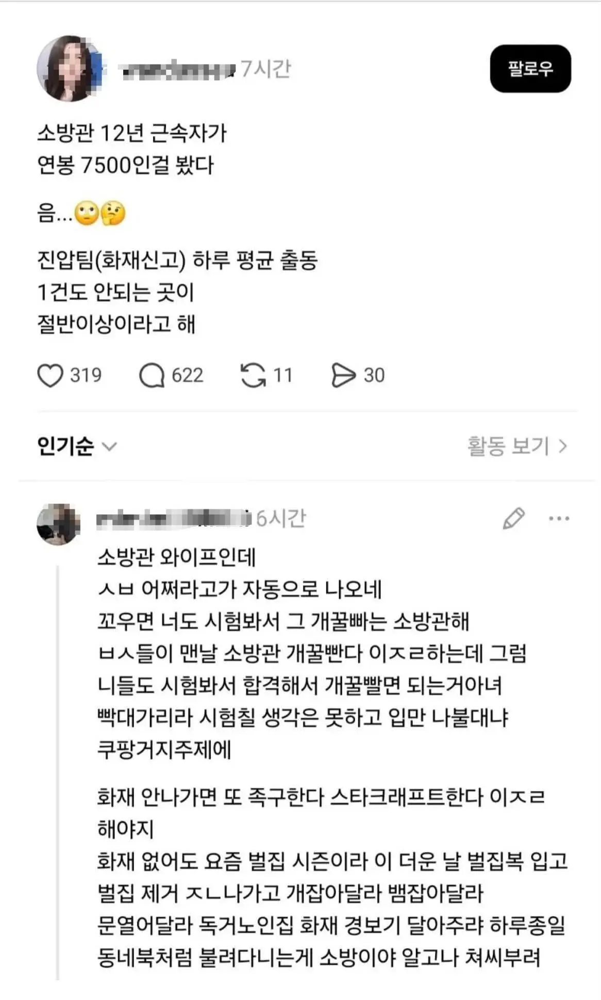

개빡친 소방관 와이프
댓글
개인적으론 기본적으로 죽음을 불사하고 구하러 와주는 일이면 그돈 맞다고봄
근데 소방관이 바쁜 세상에서 살고 싶진 않아
저거 개꿀이라며 까는 애들이 보안팀 아무것도 안하니까 자르는 애들이겠지..?
나도 가능하면 하고 싶음
못 하는 게 맞는데 솔직히 부럽긴 함
누가 시켜주면 바로 할 거임 평생
나는 누가 시켜주면 피부과 의사할래
솔직히 멋있지만 난 안할래...
어릴적 꿈이 소방관이었는데 현실은 너무...
소방관 건드리는 놈들은 진짜 쳐 맞아도 된다고 봄
저딴 개소리 지껄이는 애들은 전재산 불에태우고 캠프파이어 해줘야 정신차리려나
형들 나도 개뀰이라는 소리 듣고 합격까지 한 상태로 대기중인데 솔직히 좀 무섭다. 올해 완도 냉동창고에서 갇혀죽은 소방관 있다는 얘기 듣고 매순간 걱정이 돼
교리는 늘 발전하고, 학교 교관들도 늘 연구하고 있으니 학교에서 배운대로만 잘하면 괜찮을 거예요. 혹시나 위험할 때도 있겠지만 팀원들 믿고 가야죠!
미리 감사드립니다. 헌신과 봉사를 하겠다고 결정하신 분들을 존중하지 않을 이유가 없습니다. 살다 보면 인간에 대한 혐오와 보상 없는 희생에 지치고 포기하게 될지도 모릅니다. 포기하셔도 좋습니다. 그때까지 한 희생 덕분에 사회가 굴러가는거니까요. 만약 포기하지 않고 다시 일어서 주신다면 당신에게 더 큰 기쁨이 있기를 빕니다. 무운을 바랍니다 늘.
화이팅. 힘내고.
노고에 감사드립니다. 언제나 건강하고 항상 안전하시길 바라겠습니다.
화이팅. 몸 다치지 말고. 누구보다 소중한건 자기 자신이라는 것만 알아둬.
화재진압은 별개의 직렬?모집?이 있는거 아냐? 그리고 소방공무원 모집하면 화재진압요원만이 아니라서 저런말 나오는거 같은데.. 우리가 생각하는 요원은 화재진압 관련인데, 그외에도 많겟지 내부 운영 인력 등 그래서 댓글에도 부럽다느니 등 말이 많는거 아님?
소방공무원 모집은
소방(불만 끔, 공채)
구조(특전 출신 특채)
응급(간호자격, 경력 필요)
로 나눠짐.
소방은 화재진압이랑 기타 대민업무 둘다 할건데. 보통 소방이 구조 일까지 같이한다고생각하는 사람들이 많더라. 난 아니라고 알고있음.
현장이 어떻게 굴러가는진 모르겠다만 일단 이렇게 뽑음.
15~20년전 간호사출신 여자 응급은 조심해라
과목도 적게 봐서 꿀빨며 들어온 주제에 응급 안타고 내근하려고 기를 씀
결국 그 빈 응급자리 경방들이 응구사 따서 채움
부모님한테 소방관 한다고 해봐라 다 걱정할거다 ㅋㅋㅋㅋ
환자(우리에게 완벽한 처치를 원함)
보호자(우리에게 무조건 빠른 이송을 바람)
경찰(모든 만취자를 뇌졸중 환자라고 보며 교통사고때는환자평가중에 자꾸 인적사항을 요구하며 경찰에서 처리가능한 부분도 피하려하며 우리에게 무조건적인 병원이송을 원함)
렉카(환자상태 평가중이면 자꾸 와서 방해함)
병원(우리에게 완벽을 바라고 있고 아무리 위급해도 주취자이거나 보호자 없으면, 또는 소아라면? 절대 안받는 의료진)
사이에 끼어서 도로에서 이도저도 못해보고싶으면 오셈
소방이 응급 출동도 같이 해?
이건 응급이지않나?
공채로 와도 다 화재진압만 하진 않음ㅋㅋ
이리저리 다니다보면 결국 구급차를 타는 경우가 많다
구급차는 보통 주처치(간호사, 응구사1급), 보조처치, 운전 3인 1조인데
보조처치 또는 운전으로 자주 감
인력여건이 매우 좋은 곳이면 운전까지도 1급응구사나 간호사가 할때도 있음
아는 친구가 간호사인데. 매번 운전대 잡는거같더라고 그래서 응급으로 들어간친구만 가는줄로 생각했네.
15~20년전 간호사출신 여자 응급(대충 40대 중반)은 문제 많다
과목도 적게 봐서 꿀빨며 들어온 주제에 응급 안타고 내근 쳐들어가려고 기를 씀
내근 가면 지들이 인텔리인 척 완장질
티오 나면 간출 후배 꽂아주고 탁란질
공채 여직원들한테 태움 시전
센터 떠나면 소방학교나 본부 쳐들어가면서 응급 자격증 썩힘
결국 그 빈 응급자리를 경방들이 응구사 2급>1급 따서 채우고 있음
하여간 하는거없는 저런 씨발년들은 입 꼬매야됨
소방관이 놀고 있으면 좋은거 아님?
서버담당자 문제발생안하니까 짜르고싶어하는거랑같지ㅋㅋ
예전에 가스 생산 시설에서 일한 적이 있었는데 시설 기지 내부에 소방서가 있음.
물론 거기도 별도로 훈련도 하고 교육도 하고 예방조치 하러 점검도 하겠지만
분위기가 말년 병장만 모여있는 느낌.
그래도 일단 불 나면 제일 ㅈ되는 곳이라 막 엄청 부럽거나 그렇진 않았음..
저런글 쓴놈이 개진상 정병이 많음
저런 마인드로 소방관 출동 시키고 별별 트집잡고
무뇌라서 윗집 화장실 락스때문에 내가 염산중독된다는 민원 넣고 몇시간동안 구구절절 소방관 괴롭힘
그리고 저런글 싸지름
특: 여대나옴
로마 판테온신전 중앙에 구멍있는데 꽃잎 뿌리는 행사 할때 소방관이 꽃잎 뿌린다더라 그냥 ... 그렇다고
소방에 세금 더 부어서 인력도 양성하고 해야하는데
안전관리 / 유지보수에서 일 안하는것처럼 보이니 꿀이다, 부럽다 하는것만큼 병신같은게 없는데.
이게 다 멍청하고 무식해서 그런거임.
아는사람은 저게 일하기 시작하면 이미 문제가 생긴거고, 큰일났다고 이해하는데 멍청이들은 걍 노는게 꿀같고 하는거 없어보이니 배알꼴리고 그런거지.
그래서 인력 감축할거야? 아니면 대기/유지보수 하는거 때려치게 하고 딴 일 시킬거야?? 그러다 긴급상황 터지면 어쩔건데??
아는게 없고 능지가 딸려서 생각이 깊게 안 이루어지는거지ㅋㅋㅋㅋ
가장 유명한 예가 서버관리자 일 안하니 정리해고하고 서버 터지는 일 같은거.
점점 정신적으로 아픈 사람들이 많아지는거 같다
부모 등골이나 빠는 방구석 엠생년들이 저러더라
음..은 씨발련이 클리 불로 지져버리고 싶네 ㅋㅋ
하고 싶은데 체력검정 선에서 바로 탈락
현장직 혜택? 진급
왜 국가는 그들의 도움 없이는 유지할 수 없고, 존경한다면서 저런 좆같은 환경에 놔두는거지? 아무리 험한 일을 하더라도 하루에 7시간 정도만 근무하고 퇴근하게 하는 삶을 살도록 뽑을 수 없나. 5조 3교대 정도로
꿀이라 생각되면 빨리 소방관 하면 되는데
왜 안하고 꿀이라고만 외치고 안하지?
꿀인거 아는데 못처먹는거면 바보아님?(진짜모름)
꿀도 못빠는 쓸모없는 벌들이
열심히 일하는 꿀빠는 벌을 나무라는 ㅋㅋ
출동할일이 적거나 없으면 좋은 일 아닌가?
소방은 필기보다 체력이 자신없음
이 목걸이는 하루에 0.0001% 확률로 폭발합니다. 오작동 같은건 없고 무조건 확률형으로 폭발합니다.
이걸 24시간 목에 차고 계시면 아무 일도 하지 않아도 달에 500만원을 드리겠습니다.
물론 폭발하면 당신은 죽습니다. 차시겠습니까?
폭발 시간은 랜덤 입니다. 23시 59분에 폭발할 수도, 00시 01분에 폭발할 수도 있습니다.
365일을 살아도 100년이면 3만6천일인데, 고작 만분의 1 확률이라면 해볼만 하지 않겠습니까? ㅎㅎ
나도 소방관이 꿈인적이 있었지. 타인을 위해 목숨을 희생할 자신이 없어서 포기함
나도 그냥 소방관이 맨날 스타만 했음 좋겠는데....
저란 병신들은 왜 존재 하는 걸까 그냥 좀 뒤지지...
부러우면 직접하면 되는거 아님? 진짜 모름
뭐 꿀빠는건 사실이지
이건 친구 소방관한테 직접들은 얘기임ㅋㅋ
출동 안하면 낮잠자거나 폰게인하거나 하루종일 놀다 퇴근함ㅋㅋ
한달에 한번 출동할까말까 한다더라
아마 시골쪽이라 그런듯
개꿀이면 니가해 ㅋㅋ
사무직에서 아무리 좆같은 일이 터져봤자 밤샘야근이겠지
소방관은 불나고 건물 무너지면 현장나가는 사람들은 무조건 투입되어야하는데
당연히 위험수당이 포함된거라고 생각 못하냐?
하여간 지 앞가림이나 쳐 할것이지 남 잘되는 꼬라지 한 번을 못 봐